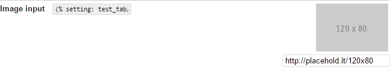
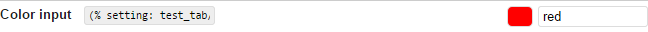
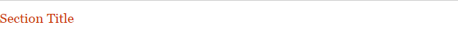

Introduction
GS Custom Settings is a plugin for GetSimple CMS which lets webmasters/ site managers, theme and plugin developers implement and use their own custom settings for output, configuration, and cross-plugin/-theme communication. It's a bit like the custom fields plugin, but not for pages. The plugin offers 8 different types of input to choose from, 3 access levels, per-user editing permission, and an easy UI to create, import and export the settings. Once activated, a new tab 'Site', is added, where one will find all settings created with the plugin, grouped by sidebar tab. View a screenshot of the UI in Manage mode or Edit mode
{kind=link}
{kind=link}
The plugin is built on Knockout JS and handles almost all logic client-side, except for plugin registration, hooks, path resolving, and handling server requests. Data is sent and saved through AJAX. Furthermore, the plugin provides an interactive notification service and a JS localization system. The language file for this plugin is also in JSON format.
GS Custom Settings is compatible with PHP 5.2+ (might work with PHP 5+, untested) and all browsers except Internet Explorer 8 and older Managing settings also works in IE8 (editing doesn't). Some features might not work on some browsers. See Known Issues for more information. If you find bugs or have feature requests or questions, feel free to open a new issue in the Github repo or write a post on the GS support forum.
Features
- Custom settings for site managers, plugin and theme developers
- 8 different setting types (select, radio, text, textarea, checkbox, image, color, section title) + 3 fancy variants (FontAwesome)
- 3 access levels for settings (normal, hidden, locked)
- Output settings in pages with
(% setting:tab/setting %)or in PHP withget_setting('tab','setting') - Output multilingual settings (only with I18N plugin 2.5.8+)
- Restrict user editing permission per user (also with MultiUser 1.8.2+)
- Feature-rich editing in 'edit' mode with multiselect, batch setting adding/removing & keyboard shortcuts
- Responsive feedback through notifications
- Import (IE10+ & other browsers)/ Export settings for re-use through the GUI
- Build and export settings directly through the UI for your plugin/ theme
- Extend existing themes and plugins with custom settings
- Access settings from other themes and plugins
- (almost) fully i18n, even custom theme and plugin settings I18n-enabled
- Available in English, French, Dutch, German, Russian & Spanish
Download, install, upgrade
Download the latest (or other) version(s) of this plugin on the GetSimple Extend Plugin page. The latest version of this plugin is 0.3. To install, simply unzip to GS plugins directory.
User Guide
Advised use
It is required that every setting and every tab have a different lookup value, the plugin will not save updates if there are duplicate lookups. It is also important to note that if you change this value, you will have to update your PHP calls. Therefore it is advised not to change the setting's tab/ label after putting it to use.
Switching between modes
The Site Settings plugin allows you to switch modes between Manage and Edit. Manage mode only allows changing the value of visible, non-locked inputs, and is meant for the webmaster/ website manager; in Edit mode, (primarily) for the developer, one can create and modify settings. Simply click the button to toggle the mode.
Editing tabs

Editing tabs is pretty self-explanatory (see image to the right). Click the tab label to edit it, and click the icons to complete any of the following actions, from left to right:
- Add a new tab
- Remove this tab
- Move this tab up
- Move this tab down
- Toggle tab label/ lookup
There are 3 types of tabs: site tabs, theme tabs and plugin tabs, displayed in that order respectively. Only site tabs are visible in Edit mode/editable (but you can extend plugin and theme tabs manually). You can also extend plugins/ themes which do not use GS Custom Settings trivially by following the instructions in For Plugin/ Theme developers.
Editing settings
To view setting details for all settings, toggle the Open/ Close All button in the top-right nav. The settings toolbar allows any of the following actions, from left to right:
- (De)select all settings
- Show/ Hide all settings' details
- Add x (x = items in selection) new settings
- Remove all selected settings
- Move all selected settings up
- Move all selected settings down
Every setting also has the two first buttons to (de)select individually & hide/show individually. As of v0.2, some setting actions can also be achieved using keyboard shortcuts, eg:
- SHIFT + click selects all settings between the setting first and last clicked.
- Ctrl + click adds the clicked setting to the selection
(v0.4+)Ctrl + F Jumps to the page search(v0.4+)Ctrl + DELETE removes all selected settings.
(v0.3-)DELETE removes all selected settings.(v0.4+)Ctrl + ArrowUp moves all settings in the selection 1 up.(v0.4+)Ctrl + ArrowDown moves all settings in the selection 1 down.(v0.4+)Ctrl + Enter adds a new setting under each setting in the selection.
Editing setting properties
Each setting has 6 (or 7) modifiable properties: lookup, label, descr, type, value, access [, options].
As of v0.4 you can also add your own properties in the JSON files. Here's what the default properties are used for/ their possible values:
lookupis the identifier used by PHP to link translations and return settings through the API functions. It is important to never have duplicate lookups in the same tab to avoid returning the wrong setting.labelis the setting's title, displayed inManagemode, and should be max 5-10 words.descris a setting's additional description, displayed inManagemode.valueholds the setting's value. For text inputs (text, textarea) this is simply the text entered, for checkbox inputs (checkbox, switch, fancy checkbox) a boolean (true/ false), and for option inputs (radio, select, fancy radio) a zero-based index.-
typeis a setting's type. It determines display inManagemode and through calls toget_setting. There are 3 setting types, each with more variants:- Text inputs (textarea, text)
- Checkbox inputs (checkbox, fancy checkbox, switch)
- Option inputs (radio, fancy radio, select)
-
accessdetermines how (in)visible the input is inManagemode:Normalis defaultLockedshows the input for display, but editing is diasbaled,
ideal for eg, fixed passwords or tracking codes.Hiddenhides the input fromManagemode,
ideal for meta properties, eg. plugin/theme versions or paths, CSS killswitch.
optionsis only present if the input is of type select, radio or fancy radio, and holds the options for the input.
Note: changing an input's type will reset its value, but changing to another subtype on the same type will not. Eg, changing from radio to fancy radio, the value will be preserved, but not from radio to checkbox.
Below is a preview of what the 8 input types look like in Manage mode.
Text
Textarea
Checkbox
Radio
Select
Image
Color
Section Title
Fancy checkbox
Fancy radio
Switch
Outputting settings
To get a setting in a page (in the WYSIWYG editor), simply type (% setting: tab/setting %).
To get a setting in themes and components, type <?php get_setting('tab/setting') ?>.
To process the return value before outputting it, type <?php return_setting('tab/setting') ?>. The easiest way to get this code, is to copy to select and copy paste the code field next to the input (the WYSIWYG code is visible in Manage mode, the PHP code in Edit mode.) Beneath is a listing of the return values for each type of input (the 'fancy' versions as well as switch simply make use of font icons instead of standard inputs):
| Input types | With get_setting |
With return_setting($tab, $setting, $value) |
text |
Returns the text content from the field | Returns the text content from the field |
textarea |
Returns the text content from the field | Returns the text content from the field |
checkbox |
Returns 'on' (checked) or 'off' (unchecked) |
Returns TRUE (checked) or FALSE (unchecked) |
radio |
Returns the selected option's text value. | Returns the selected option's zero-based index. |
select |
Returns the selected option's text value. | Returns the selected option's zero-based index. |
image |
Returns an image tag <img src="input_value" alt="input_lookup">. |
Returns the image URL. |
color |
Returns the input's value. | Returns the input's value. |
section title |
Returns NULL (section titles have no value). | Returns NULL (section titles have no value). |
switch |
Returns 'on' (checked) or 'off' (unchecked) |
Returns TRUE (checked) or FALSE (unchecked) |
fancy checkbox |
Returns 'on' (checked) or 'off' (unchecked) |
Returns TRUE (checked) or FALSE (unchecked) |
fancy radio |
Returns the selected option's text value. | Returns the selected option's zero-based index. |
For webmasters/site managers
Importing settings
You can import settings by clicking the import button (in v0.2, will not work if your browser is IE9 or below). Make sure your file is valid JSON and your filename contains the string theme_data (for theme settings), plugin_data (for plugin settings) or tabname_data (for separate site tabs). For importing multiple site tabs, your file should be named data.json. Importing settings will: overwrite settings that already exist, and add new settings if they don't. Importing settings does not replace an entire tab or remove settings not present in the import. If you prefer you can also manually import settings by copying previously exported settings files to /data/other/custom_settings.
Exporting settings
You can export settings simply by clicking the export button. You can export 1) all site settings by choosing 'Site Settings', 2) a separate site tab (by name), 3) a separate plugin tab (by name), and 4) the theme settings of the currently selected theme by choosing 'Theme Settings'. You can also manually backup all settings by making a copy of /data/other/custom_settings.
Restricting editing permission (also with Multi User 1.8.2+)
Go to root/data/users/ and edit the XML file for the user you want to restrict editing permissions for. Simply add an XML node <KO_EDIT>FALSE</KO_EDIT> and you're done. TRUE also works (to allow editing) but this is the default, so it doesn't really matter. As of v0.3, user permission can be set through Mike Henken's Multi User 1.8.2+ plugin. To do so, go to GS Settings tab, click on User management, and when you edit the user, in the Custom Permissions section, check GS Custom Settings to disable Edit access, and save.
Note: Upon activation or deactivation of Multi User, GS Custom Settings user permissions will be reset (so you have to do like above/ re-edit the user file).
For theme developers
GS Custom Settings allows you to build custom settings for your theme through an easy UI,
and they can even be multilingual! No need for building a custom plugin like the InnovationPlugin. After you have downloaded Custom Settings, and installed it on your local/ test site (just like other GS plugins), go to Site tab, switch to Edit mode, create a new tab (name it however you like), add all the settings you need, and in the list toolbar, in the select next to Export tab as:, choose Theme.
If for some reason the file isn't automatically named settings.json, rename it to that.
The descriptions/ labels/ values exported will be used as default values in the default language. If you want, you can add more languages by creating a subdirectory in your theme named lang.
For example a simple GS theme with trilingual custom settings would have a directory like this:
Theme root
├─ assets/
├─ images/
├─ style.css
├─ template.php
├─ functions.php
├─ settings.json (with en_US as standard)
└─ lang/ (optional)
├─ en_US.json
├─ fr_FR.json
└─ de_DE.jsonThe only translatable strings are a setting's label,descr and options (if the setting is a select, radio or fancy radio). For each of these, you should prefix the property with the setting's lookup. The language files in the lang directory should have a strings object holding all strings for the settings. You can optionally add a meta object containing information about the translation version, author, date etc.
{"meta": {"author":"me"}, /* meta is optional */
"strings": {
"mysetting_label": "Label",
"mysetting_descr": "Description",
"mysetting_options": [
"option1",
"option2",
"option3"
],
"mysecondsetting_label": "Label 2",
"mysecondsetting_descr": "Description 2"
}
}You're set! When your theme is activated in the GS theme tab, your settings will appear in the Custom Settings sidebar in the tab Theme settings (GS tab Site). The data is saved to /data/other/custom_settings/theme_data_<themename>.json.
Not entirely sure yet? For more examples, read the Theme tutorial.
For plugin developers
GS Custom settings provides a sleek GUI for building and (later) updating, or managing (by third parties) your plugin's settings. In your plugin's directory (create one if you didn't have one already, and give it the same name as your plugin's ), you should have a valid settings.json file, create a lang subdirectory (if
- Create a plugin directory with the same name as your plugin's main
.phpfile if you haven't already. -
In this directory you should have a valid JSON settings file, named
settings.json. You can build this either:- Manually: If you choose this, make sure your file has the required format, and your JSON contains no errors. You can test this with JSONlint.
- Through the plugin's GUI (easiest):. To do so, install the plugin on your test site, go to Site tab, switch to Edit mode, create a new tab, give it your plugin's name, and add all the settings you need. When ready, in the toolbar's
Export tab as:dropdown, choosePlugin. Save the file assettings.jsonin your plugin's directory.
- If you want your plugin to be multilingual, create a
langsubfolder in your plugin folder, and include all language files with PHP locale used by GetSimple (eg,en_US, fr_FR, de_DE). Translatable setting properties are:label, descr, options. The format of the JSON file should be as in the sample language file in the Attachments section.
Your plugin directory should look like this for GS Custom Settings to work:
/plugins/
├─ your_plugin.php
└─ your_plugin/
├─ settings.json (with default language)
└─ lang/ (optional)
├─ en_US.json
├─ fr_FR.json
└─ de_DE.jsonThe only translatable strings are a setting's label,descr and options (if the setting is a select, radio or fancy radio). For each of these, you should prefix the property with the setting's lookup. The language files in the lang directory should have a strings object holding all strings for the settings. You can optionally add a meta object containing information about the translation version, author, date etc.
{"meta": {"author":"me"}, /* meta is optional */
"strings": {
"mysetting_label": "Label",
"mysetting_descr": "Description",
"mysetting_options": [
"option1",
"option2",
"option3"
],
"mysecondsetting_label": "Label 2",
"mysecondsetting_descr": "Description 2"
}
}GS Custom Settings provides 4 hooks for your plugin's functions. To use it, do: add_action($hook_name, $function)
You can also output a link to your custom settings in your plugin tab by using <?php get_tab_link('myplugin','link title') ?>. When clicked, it will open the relevant item in the Custom settings sidebar.
It should be noted that you don't need to manually add a hook to initialize your settings. As soon as custom_settings.php is included in the site, the settings.json file from your plugin's settings (if it is activated) will be automatically added to the custom settings UI. You should only use functions like remove_setting and set_setting to update settings from an old to a newer version. If so, be sure to include a hidden version setting to check.
Plugin data is saved to /data/other/custom_settings/plugin_data_<yourpluginname>.json.
PHP API
Functions
get_settingget_i18n_settingreturn_settingreturn_setting_groupget_tab_linkset_settingremove_settingHooks
custom-settings-loadcustom-settings-savecustom-settings-render-topcustom-settings-render-bottomPlugin info
Translating the plugin
You can help translating this plugin by downloading it first (see Download, install, upgrade) and in the plugin folder, in the /lang folder, copy paste the en_US.json (or another) language file somewhere, update the meta info (revision, data, translator), and change the strings texts.
Dependencies
GS Custom Settings includes:
Known issues
Find the list of currently known issues on Github
20/05/2015 - V. 0.4 (DevChills) - Using cyrillic chars in the plugin will cause an error which disables saving updates. - Content filter (% %) doesn't work anymore - Cyrillic chars are stripped out of setting lookups - 'Search..' label not translated - Code copy lookup tooltip in Edit mode + sidebar tooltip for label/lookup toggle are incorrect - Update notification & plugin version are wrong - Last setting in a tab can't be removed - Theme import not working (+not working for I18N-settings) 17/04/2015 - V. 0.3 (Critical fix) - Moving the before-last tab down in Edit mode may cause a fatal error - get_setting always returns NULL when third parameter set to false - get_setting with image settings with whitespace in the path name are broken - Image setting returns broken image if link is not set (now empty string) - Color setting saves empty 'options' property - return_setting returns an entire tab when setting isn't found (now NULL) - notifications don't appear above sidebar when sidebar is set to sticky in gsconfig - Tab labels can only contain ASCII Latin characters (eg, no Arab/ Russian), see http://unicode-table.com/ - Changing the 'lookup' property of a setting results in non-blocking JS errors. - 'Section Title' & empty image input placeholder is not translated - Edit mode multiselection bugs in IE8 - Plugin breaks when GSADMIN is set to something else than 'admin' 30/03/2015 - V. 0.2 (beta) - 'custom-settings-init' hook not working reliably - Tab labels can only contain ASCII Latin characters (eg, no Arab/ Russian), see http://unicode-table.com/ - FATAL: When no settings or tabs are present on first load, a fatal JS error blocks the plugin from loading - When restricting permission, Export & Import are also unavailable. - Empty text value settings are reset on first save if value is empty - 'Section Title' is not translated - Edit mode multiselection bugs in IE8 - KO site settings showing as title when no 'site' tabs are created instead of 'GS Custom Settings' - Settings import only works with IE10 & up - When repeatedly batch editing settings, selection might bug or actions might not be executed on entire selection - Repeatedly importing settings for the same tab without reloading the page/ importing settings for another tab first doesn't work - Minor JS 'input focus' error (non-blocking) - Security token sent along with data - return_setting returns entire setting when asked for absent property (now returns NULL) - return_setting returns entire setting for option inputs instead of value only when value is index 0
Changelog
25/05/2015 - V. 0.4.1 (Cyrillic)
New:
- Added option to disable display of lookup code copy in Manage mode
Changes:
- More space & textarea resize for settings in Edit mode
- Minor CSS changes & CSS file restructured
- Labels in Manage mode have a title attribute which displays their (full) lookup properties
- Code copy fields only appear in Manage mode when hovering over the setting
- Added server cache refresh on plugin update
Bugfixes:
- Fixed Cyrillic char problem with custom JSON indentation function
- Fixed Cyrillic chars being stripped out of setting lookups
- Fixed 'Search..' label not translated
- Fixed code copy lookup tooltip in Edit mode + sidebar tooltip for label/lookup toggle
- Fixed wrong version in plugin registration
- Fixed unable to remove the last setting in a tab
- Fixed crappy page display on load
- Fixed content filter
- Fixed theme import not working (+not working for I18N-settings)
20/05/2015 - V. 0.4 (DevChills)
New:
- 3 new plugin hooks 'custom-settings-save', 'custom-settings-render-top', and 'custom-settings-render-bottom'
- Plugin version notification & download through the UI
- Fully automatic version update of settings for themes/ plugins
- Added '?' help tab with version info, links, & translator credits
- Text & textarea settings can now be multilingual (with I18n plugin v.2.5.8+)
- Added PHP function get_i18n_setting() for multilingual settings (with I18n plugin)
- Added PHP function return_setting_group()
- It is now possible to store custom setting properties in JSON file (for checking with PHP)
- Renewed keyboard shortcuts
- When GSSTYLESBFIXED is set, the toolbar in Edit mode will sticky to the top of the window
- Tab options: enableReset ('Reset all settings' button) & 'enableAccessAll: false' hide tabs for users without editing permission
Changed:
- Upgrade from v0.1 no longer supported - to do this, deactivate, download v0.3, activate, then install 0.4
- Search filter improved (lower & uppercase)
- Code fields now show the bare lookup as title
- Tab lookups can now be set manually from the tab toolbar (tag icon)
- If gsconfig is set to have sticky sidebar, the toolbar in Edit mode will also be sticky
- Tabs may now contain any unicode characters: use at your own risk
- Textareas are resizeable vertically in Manage mode
- return_setting($tab, $setting) now returns the value instead of full setting. To return full setting, pass FALSE as third parameter
- Export output changed minimally
Bugfixes:
- Fixed moving tab down in Edit mode causing an unrepairable bug
- Fixed get_setting always returning NULL when third parameter set to false
- Fixed get_setting with image settings to encode whitespace
- Fixed empty image setting returning broken image if link is not set (now empty string)
- Fixed empty options being saved for color setting
- Fixed return_setting returning entire tab when setting wasn't found (now NULL)
- Fixed notifications not appearing above sidebar when sidebar is set to sticky in gsconfig
- Fixed 'Section Title' input & empty value image placeholder name not being translated
- Fixed (% setting %) content filter not correctly outputting HTML tags
- Removed 2 non-blocking JS errors
15/04/2015 - V. 0.3 (Critical fix)
New:
- Multi User plugin integration (v1.8.2 onwards)
- Added image & color input fields
- Added section title fields
- Theme settings can now use the shorter tab name 'theme' instead of 'theme_settings', eg get_setting('theme','setting')
- Links in descriptions become automatically clickable in 'Manage' mode
- Added per-tab search filter for settings (lookup/ label)
- Added language German & Spanish (fourth & fifth languages, so might need revision)
Changed:
- Removed 'custom-settings-init' hook (unreliable)
- Except for import/ export/ multiselect, now fully compatible with IE8 (previously only Manage mode)
Bugfixes:
- 'KO site settings' replaced as title with 'GS Custom Settings' (in UI)
- Eliminated minor JS 'input focus' error
- Import & Export buttons now also available to users who cannot access Edit mode (backup purposes)
- Fixed (% setting: tab/setting %) (now same as get_setting instead of return_setting)
- Fixed text settings not saving when value hasn't been set
- Fixed security token being sent with data (no longer)
- Fixed return_setting returning entire setting when asked for absent property (now returns NULL)
- Fixed loose checking bug returning entire setting for option inputs instead of value only when value is 0
30/03/2015 - V. 0.2 (Beta)
New:
- Fully translatable, (almost) no hard-coded values anymore
- Github repo at https://webketje.github.io/gs-custom-settings (issue tracking)
- Complete UI overhaul, including:
- tab/setting actions moved to one toolbar to unclutter the UI
- opening a tab in edit mode is the same as in manage mode (used to be through icon)
- Settings can now be batch selected/(re)moved/added
- settings keyboard functionality (Ctrl, Shift for multiselect & Delete)
- Import & export data directly from the UI as backup/ transfer to other site.
- Export tab directly to JSON for plugin/theme dev with custom settings.
- Enhanced, translatable notification manager
- Theme developers can now register their custom settings, i18n-enabled.
- Plugin developers can now register their custom settings, i18n-enabled.
- Added security token check to AJAX filehandler.
- Added PHP API with variable caching for better performance
- Permissions can be restricted per user by adding a false node to the user.xml
- Added languages French, Dutch.
Changed:
- Removed the ability to view all tabs in one (performance)
- Plugin folder ko_base deleted, all contents moved into one folder
- Renamed plugin more appropriately to 'Custom settings' as the focus and intent shifted away from original design.
- Added readme.md to ZIP package with some basic instructions
- Setting lookups 'tokens' must now be set manually
- Settings in the plugin's PHP functions must now be retrieved with function($tab, $setting) instead of 'tab/setting'
Bugfixes:
- Fixed array dereferencing issues. Plugin should now be compatible with PHP 5.2+
- Fixed .htaccess for settings data. No longer accessible through browser/ HTTP requests (safer)
- Fixed 'switch' input saving empty options array
- Fixed moving a tab up or down causing settings' tab field to be changed
- Fixed plugin not loading default language in case language file is missing
- Clicking labels now automatically moves focus to the relevant inputs
- JSON data is now formatted properly when saved, both through Javascript and PHP
- Buttons in sidebar now properly disabled when unusable
18/02/2014 - V. 0.1 (Alpha)
Initial launch